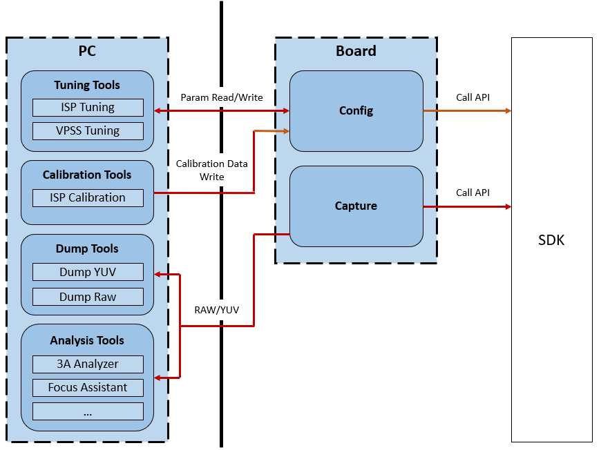
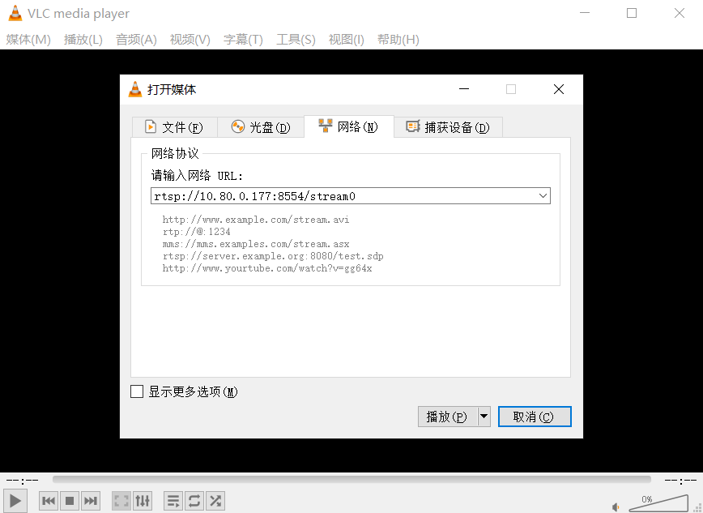
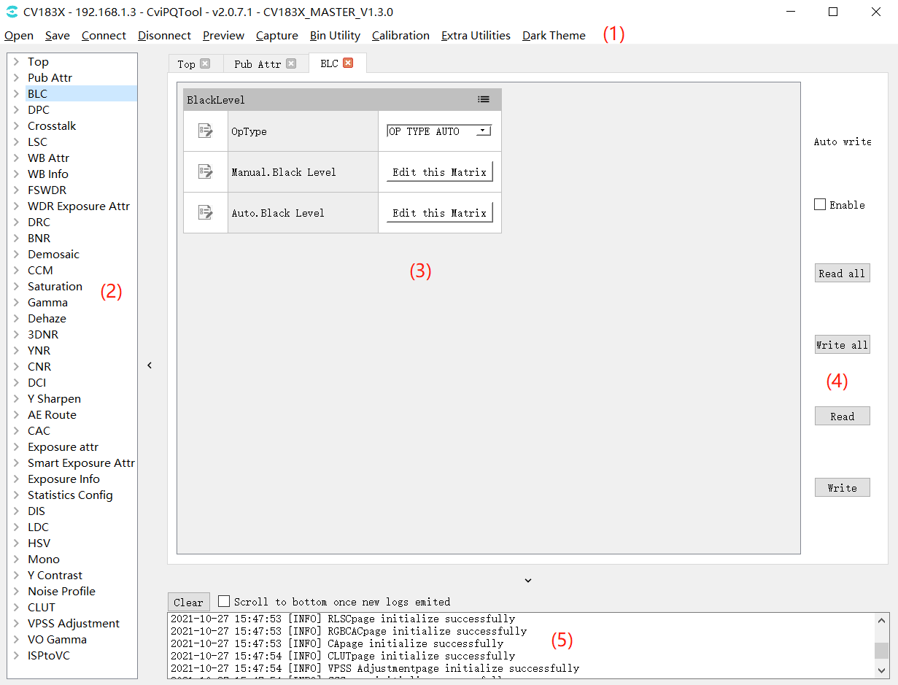
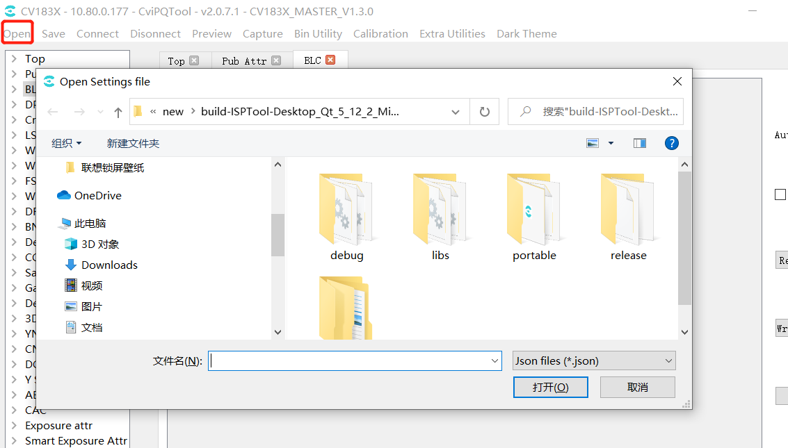
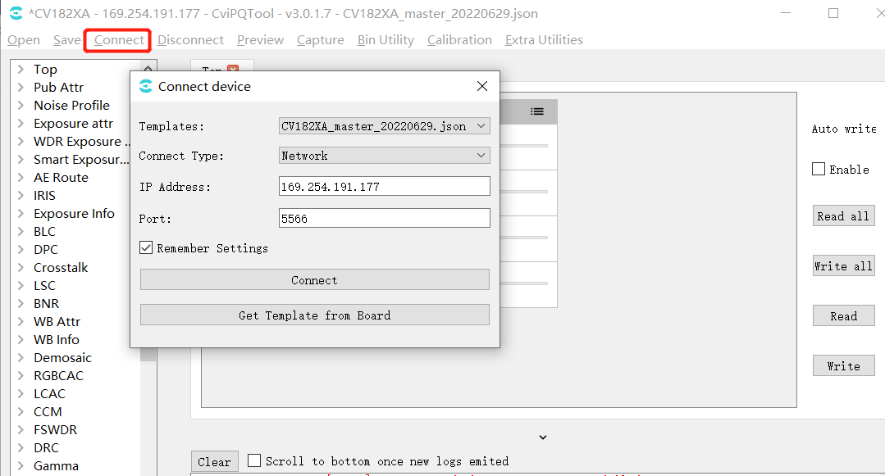
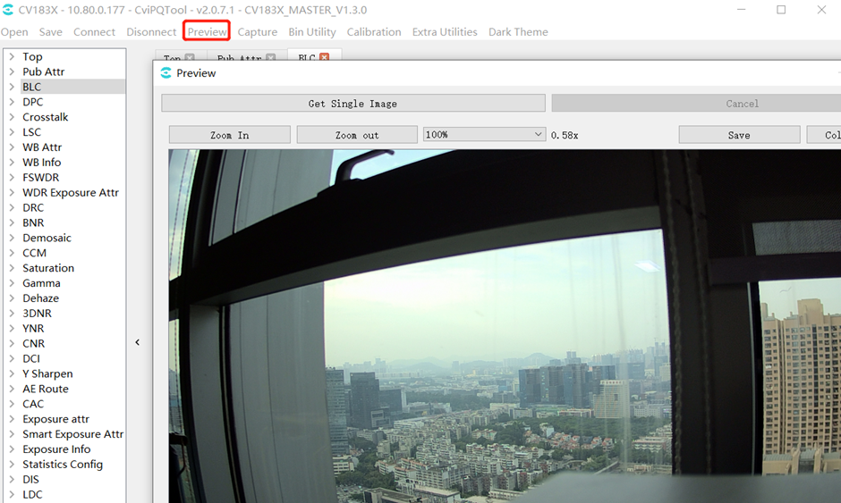
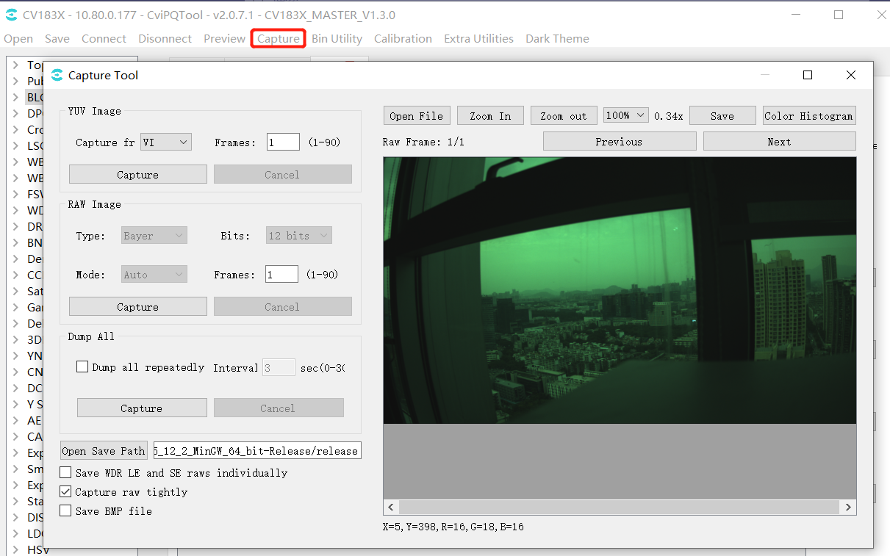
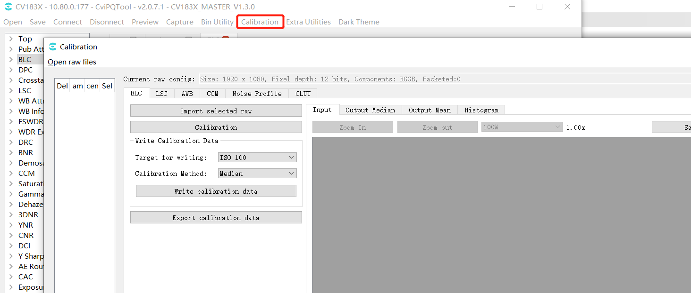
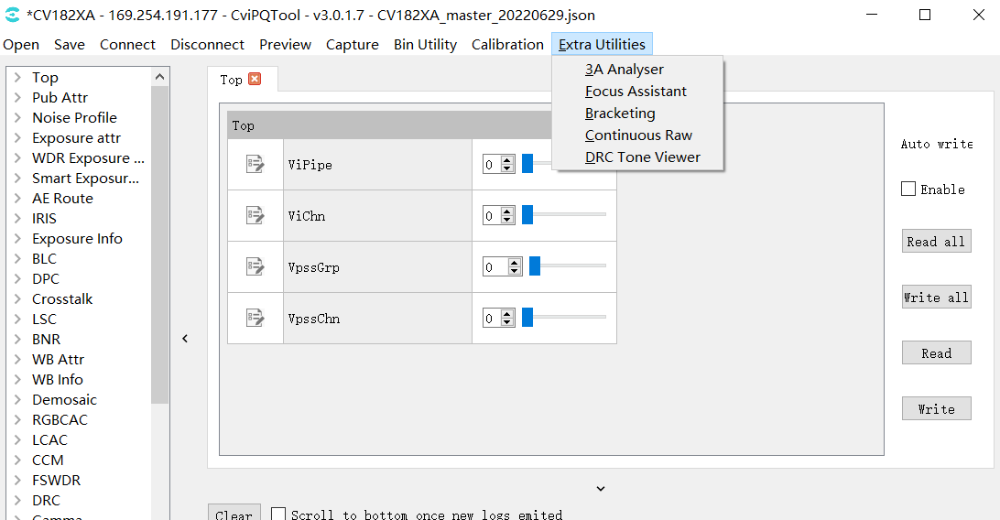

2. Overview¶
2.1. Tool Overview¶
CviPQ Tool is a professional image quality tuning tool. After connecting it to a board, users can tune the parameters of each ISP module online and view the results in real time. It also provides ISP calibration functions that generate data for modules requiring calibration, helping users tune parameters for better image quality.
The CviPQ Tool architecture is shown in Figure as shown, mainlythe relevant informationisPCthe relevant informationofCalibration Toolinthe relevant informationtuningtool (Tuning Tools) , (Calibration Tools)andanalysistool (Analysis Tools), andCapture Tool (Dump Tools).
{kind=link}

Figure 2.1 CviPQ Tooltoolthe relevant informationFigure¶
2.2. Environment Preparation¶
2.2.1. Hardware and Software Requirements¶
Hardware Requirements
Desktop or laptop computer
Single-board hardware (with a network port)
Network cable
The display resolution must be at least 1024 by 768
Software Requirements
Windows 7 64-bit or later must be installed
A media player, such as VLC media player
2.2.2. Physical Link Connection¶
CviPQ Tool consists of PC client software and board-side service software, which communicate over a network.
The physical link can use either a direct connection or a local network connection:
Direct connection::
usethe relevant informationrespectivelythe relevant informationPCandboard sideofnetworkport.
Local network connection::
usethe relevant informationwillboard sidenetworkportthe relevant informationbydeviceofthe relevant informationport( LANthe relevant information).
ifPCuseNonethe relevant informationnetwork, the relevant informationaccording toNonethe relevant informationpointofthe relevant informationmethodwillPCthe relevant informationcurrentthe relevant informationbydeviceofNonethe relevant informationpoint; ifusehasthe relevant informationnetwork, the relevant informationsamethe relevant informationusethe relevant informationconnectionPCnetworkportandthe relevant informationbydeviceofthe relevant informationport ( LANthe relevant information).
2.2.3. EVB UART Connection¶
Refer to the EVB User Manual.
2.2.4. Release Package Directory¶
Copy isp_tool_daemon.tar.gz from the release package to the board and extract it to generate the install directory. The directory structure is shown below.

config.ini is the configuration file used when running isp_tool_daemon. It configures the log level, the default PQBin output path, and the file path for the Sensor type.
CviIspTool.sh is a script for quickly starting isp_tool_daemon.
2.2.5. Installing and Running the Board Software on Linux¶
Step 1. isp_tool_daemon.tar.gzextractthe relevant informationofdirectorythe relevant informationas 2.2.4. Release Package Directory sectionFigureas shown.
Step 2. Configure the board IP address: ifconfig eth0 xxx.xxx.xxx.xxx
Step 3. Enter the generated install directory: cd /mnt/sd/install
Step 4. Run ./CviISPTool.sh to start the board-side program.
Step5. connectionVLCdisplayimage
{kind=link}

Step6. inPCthe relevant informationenableCviPQToolandandInputboard sideIPthat iscanthe relevant informationaboveboard side

2.3. Installing the PC Software¶
The CviPQ Tool PC software is portable and requires no installation. Extract the package to any writable directory, then double-click CviPQTool.exe in the extracted directory.
extractthe relevant informationofdirectorythe relevant informationas Figure as shown.

Figure 2.2 extractthe relevant informationofdirectorythe relevant information¶
CviPQTool.exe is the CviPQ Tool executable. Double-click it or right-click and open it to run.
settings.json is the CviPQ Tool configuration file. Parameters are saved here when Remember Settings is selected in the board connection interface.
imageformats/platforms/stylesdirectoryunderthe relevant information CviPQ Toolthe relevant informationoflibrary file, itsthe relevant informationofDLLlibrary filemainlythe relevant informationQtandopencvofrunwhenthe relevant information
2.4. Quick Start¶
2.4.1. Single-Board Connection Interface¶
userinthe relevant informationrunCviPQTool.exeofwhenthe relevant information, willthe relevant informationConnecting to the Boardwindow, as Figure as shown, the relevant informationuserthe relevant informationConnecting to the Boardperformimagequalitytuning.

Figure 2.3 Connecting to the BoardinterfaceFigureexample¶
Templates: selecttool uithe relevant information;
Connect Type: networkconnection;
IP Address: board sideIPAddress;
Port: portthe relevant information;
Remember Settings: savecurrentwindowsetthe relevant informationsettings.json, underthe relevant informationenabletoolautomaticimportset.
Get Template from Board: fromboard sideobtainuithe relevant information(the relevant informationcanmanualwillui jsonfilethe relevant informationtemplatesdirectory, the relevant informationtool, the relevant informationfromTemplatesdrop-downthe relevant informationselect)
setthe relevant informationoption, clickConnectbutton, the relevant informationTool Main Interface, toolwillautomaticthroughnetworkconnectionPCandboard, andandthe relevant informationwillautomaticfromboard sidereadalltuningitemofParametervalue.
the relevant information
Note: enabletoolwhen, Templatesthe relevant informationdefaultuithe relevant information, canclickGet Template from Boardbuttonfromboard sideobtainthe relevant informationofuithe relevant information, the relevant informationfromTemplatesdrop-downthe relevant informationselectthe relevant informationobtainofjson,the relevant informationclickConnectbutton, etc.afterthe relevant informationUi, the relevant informationtoolmaininterface.
2.4.2. Tool Main Interface¶
Tool Main Interfaceas Figure as shown.
{kind=link}

Figure 2.4 Tool Main Interface¶
CviPQ Tool toolofmaininterfacecanthe relevant informationisusingunderthe relevant informationarea:
(1).toolbar: the relevant informationofoperationthe relevant informationoption
(2).tuningTablethe relevant information: displayallmoduleofcantuningitem
(3).tuningarea: thisareawilldisplaybytuningTablethe relevant informationmodulecorrespondingtuningpage
(4).the relevant information/the relevant information: canselectautomaticread/write, read/writeallpageorcurrentpagedata
(5).promptbar: displaythe relevant information
2.4.3. Common Operations¶
2.4.3.1. Saving a Tuning Data File¶
intoolbarthe relevant informationclick "Save" button, willthe relevant informationselectpathofdialog.whenuserthe relevant informationpathwhen, toolwillwillcurrenttuningthe relevant informationTableofParameterperformsave, saveoffileformatis *.json, the relevant informationParameterandtuningTableofthe relevant information.

Figure 2.5 the relevant informationtuningdatafileinterfaceFigureexample¶
2.4.3.2. Opening a Tuning Data File¶
Click Open on the toolbar to open a dialog for selecting a data file. When the data file is opened, the tool loads its parameters and displays them in the tuning panel.
{kind=link}

Figure 2.6 Opening a Tuning Data FileinterfaceFigureexample¶
2.4.3.3. Connecting to the Board¶
intoolbarthe relevant informationclick "Connect" button, willthe relevant informationConnecting to the Boardwindowas Figure as shown.usercanin "IP Address" the relevant informationInputboardof IP Address, andin "Port" the relevant informationInputthe relevant information, click "Connect", the relevant informationtoolConnecting to the Board.
{kind=link}

Figure 2.7 Connectwindow¶
2.4.3.4. Disconnecting from the Board¶
intoolconnectionthe relevant informationboardofthe relevant informationunder, intoolbarthe relevant informationclick "Disconnect" button, that iscanthe relevant informationtoolandboardofconnection.

Figure 2.8 Disconnect button¶
2.4.3.5. Image Preview¶
clicktoolbar"Preview"button, the relevant informationPreviewwindow, click"Get Single Image"button, willcaptureanddisplayimage.(toolandboardconnection, boardconnectionVLCordisplaythe relevant informationnormalthe relevant informationFigure)
{kind=link}

Figure 2.9 Image Previewwindow¶
2.4.3.6. Capture Tool¶
clicktoolbar"Capture"button, the relevant informationasFigureCapture Toolwindow, the relevant informationdescribethe relevant information 3.4.1. Capture Tool section.
{kind=link}

Figure 2.10 Capture Toolwindow¶
2.4.3.7. Bin Import and Export¶
clicktoolbar"Bin Utility Tool"button, the relevant informationasFigureBin Utility Toolwindow.

Figure 2.11 Bin Import and Exportwindow¶
Export Bin File: willboard sideParameterexportthe relevant informationpcthe relevant informationsaveisbinfile;
Import Bin File: willpcthe relevant informationbinfileimportboard side;
Fix Bin To Flash: inboard sidegeneratebinfile;
Author,Description,TimeisfileDescriptioninformation, board siderunloadbinwhen, the relevant informationwillthe relevant information.
2.4.3.8. Calibration Tool¶
clicktoolbar"Calibration"button, the relevant informationasFigureCalibration Toolwindow, the relevant informationdescribethe relevant information 3.2. ISP Calibration Tool section.
{kind=link}

Figure 2.12 Calibrationtoolwindow¶
2.4.3.9. Auxiliary Tools¶
clicktoolbar"Extra Utilities"button, the relevant informationdrop-downoption, canthe relevant information3A Analyser,Focus Assistant,Bracketing, Continuous Raw, DRC Tone Viewertool, the relevant informationdescribethe relevant information 3.4. Other Auxiliary Tools section.
{kind=link}

Figure 2.13 Auxiliary Toolswindow¶
2.4.3.10. Keyboard Shortcuts¶
Keyboard Shortcutsas followsFigureas shown: